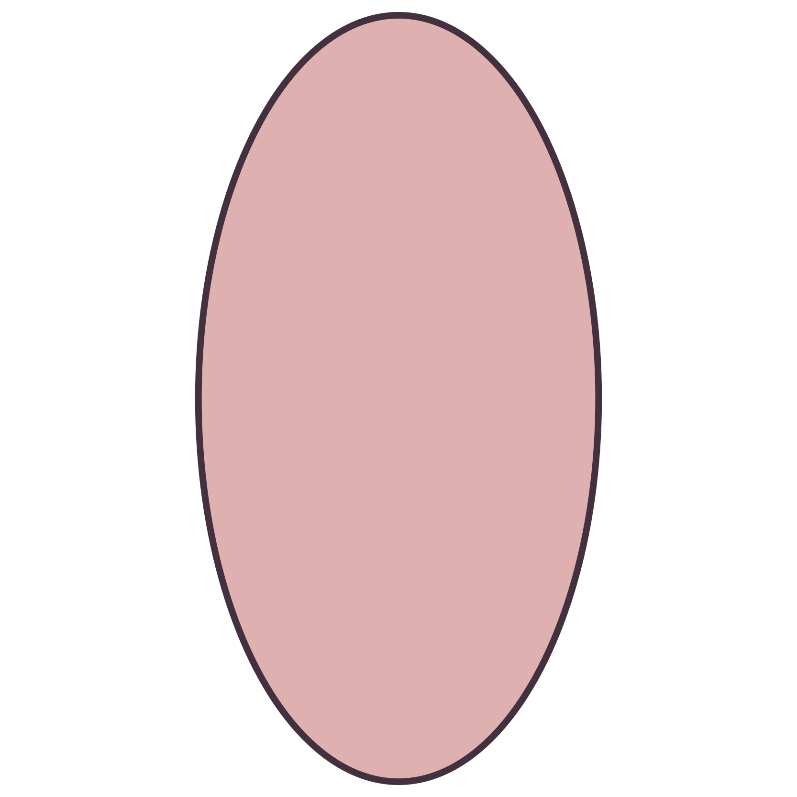
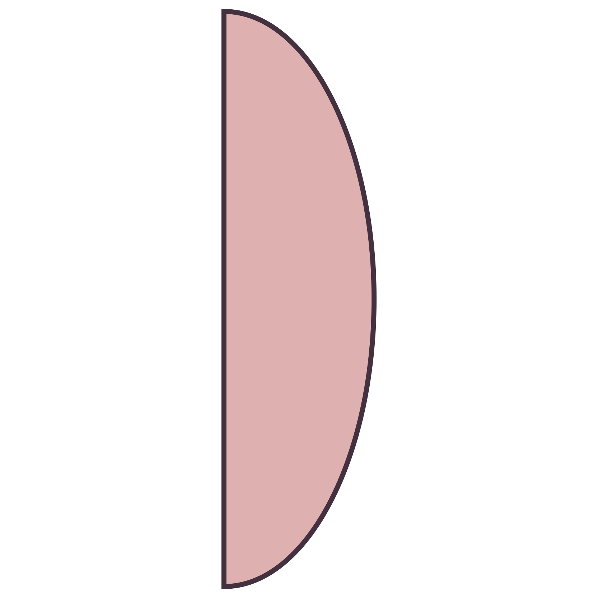
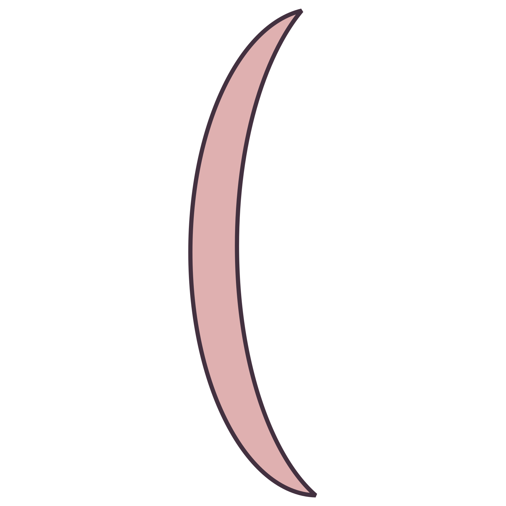

Lensa cembung atau disebut konveks memiliki bagian tengah lebih tebal dari pada bagian tepinya dan biasanya lensa cembung ini merupakan lensa potisif. Sinar-sinar bias pada lensa ini bersifat mengumpul (konvergen) oleh karena itu, lensa cembung disebut juga lensa konvergen.
Macam-macam bentuk lensa cembung
| Cembung tangkap atau bikonveks |  |
|---|---|
| Cembung datar atau plan-konveks |  |
| Cembung cekung atau konkaf-konveks |  |
Sinar istimewa pada lensa cembung
Pada lensa cembung terdapat tiga sinar istimewa yaitu:
1. Sinar data sejajar sumbu utama lensa dibiaskan melalui titik fokus aktif F1
2. Sinar datang melalui titik pusat optik diteruskan tanpa membias